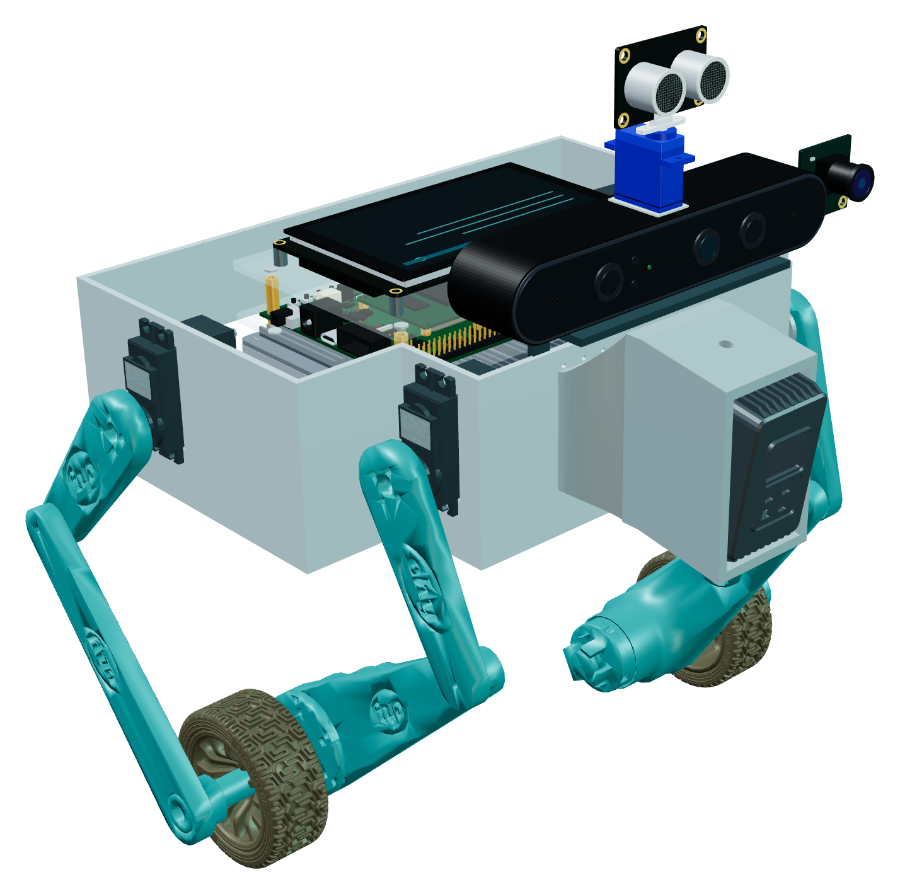
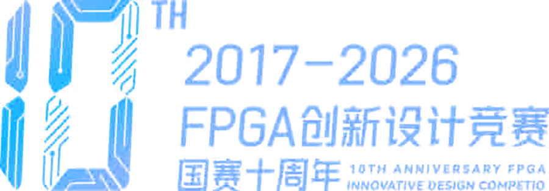
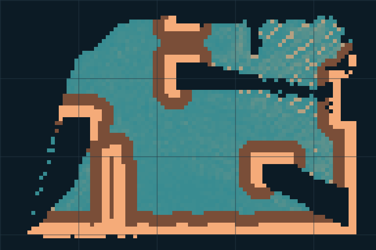
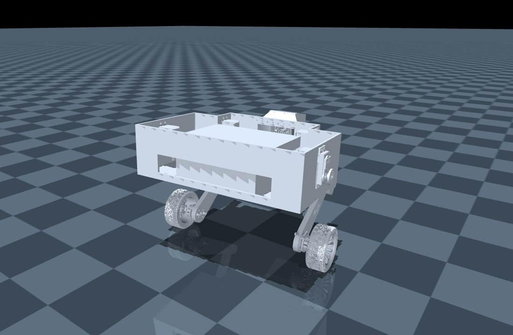
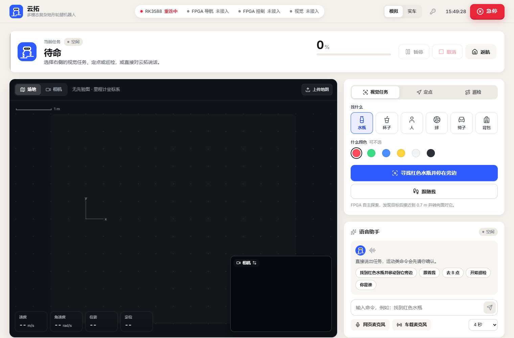
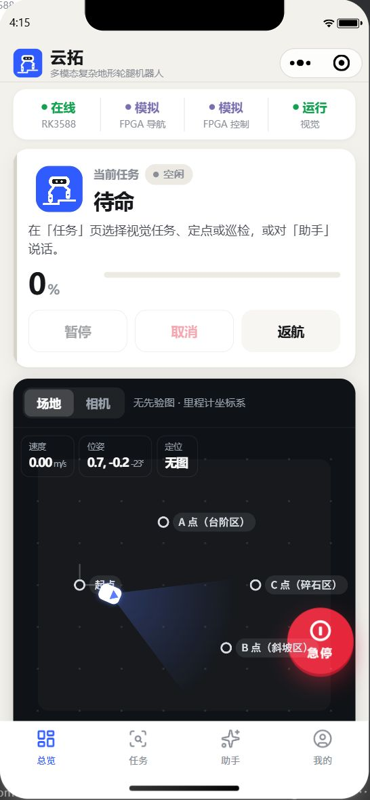
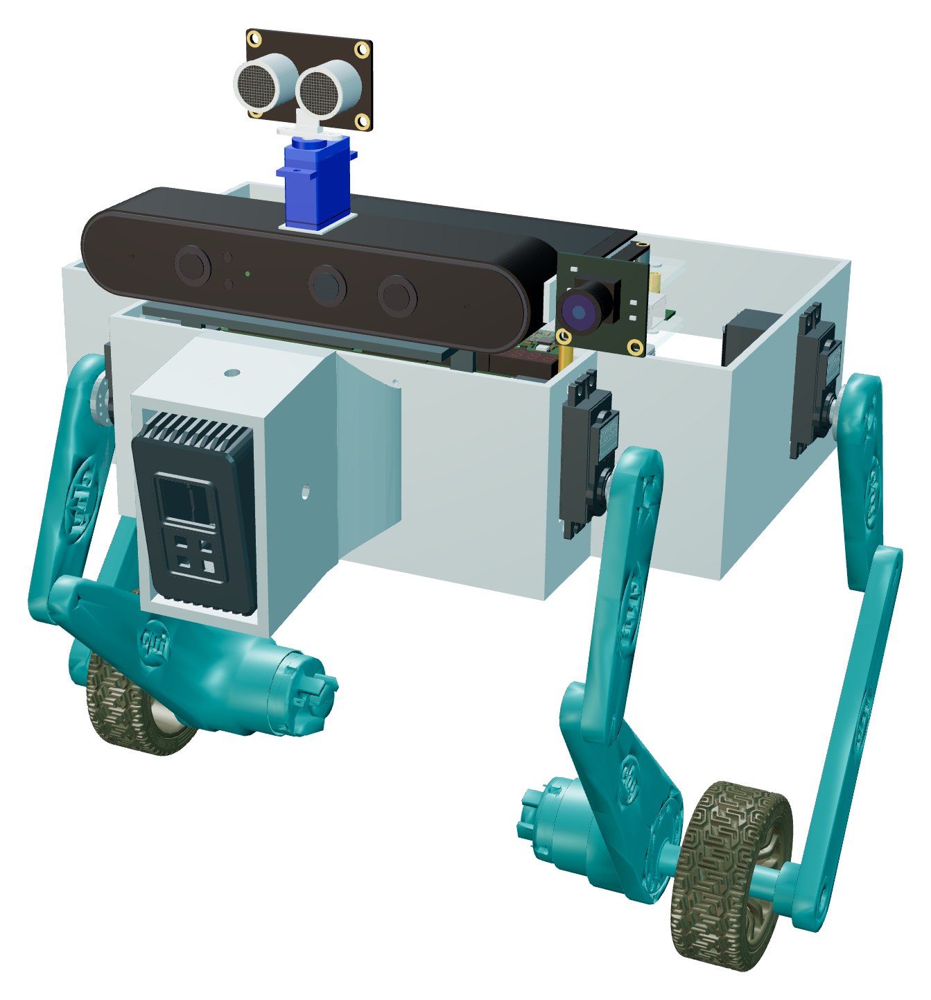

FPGA × RK3588 · WHEEL-LEGGED ROBOT
云拓
YunTuo Robot
一片 FPGA，完成感知、导航与运动控制
两轮自平衡轮腿机器人：雷达建图、自主导航与强化学习控制
运行在高云 GW5AT-LV138 上，RK3588 离线理解视觉与语言任务
同片协同
导航 + 运动控制
边缘智能
RK3588 离线多模型
双端交互
Web + 微信小程序

YunTuo
Robot
01 项目概况
面向复杂地形巡检与找物的轮腿机器人
两轮驱动 + 四路腿部舵机 · 车身高度 85–190 mm 可调
两轮自平衡底盘与四路腿部舵机实现平衡、移动与高度调节；
雷达和超声波感知环境，相机识别目标。
任务 1
多传感器感知
FPGA 采集 OV5640 与 BMI088，车顶触摸屏实时叠加姿态角
任务 2
运动控制
片上强化学习策略 125 Hz 推理，编码器轮速闭环
任务 3
实时避障
雷达点云硬件建图，超声波近距补盲，驱动减速、停车与绕行
任务 4
自主导航
结构匹配定位 + A* 全局路径 + 局部轨迹评估
任务 5 · 6
拓展智能任务
RK3588 离线语音、语言与视觉模型，一句话找物
02 系统架构
FPGA 负责实时闭环，RK3588 负责理解任务
RK3588 · 边缘多模态任务引擎
YOLO26n · Qwen3-1.7B · SenseVoice · Matcha 语音合成 · 任务编排
云端 · Web · 小程序
Nginx · 网关 · MediaMTX
任务 · 视觉目标 · 地图
导航状态 · 控制遥测
高云 GW5AT-LV138 FPGA · 单片实时闭环
RTL 流水线
点云投影
高程建图
地形代价
结构匹配打分
超声回波计时
图像姿态叠加
PicoRV32 软核
位姿融合
A* 全局规划
局部轨迹选择
探索与跟踪
速度安全约束
强化学习控制
原 4500 策略
125 Hz 推理
高度逆运动学
轮速闭环
舵机 · 电机 PWM
OV5640 摄像头
DVP · FPGA 直接采集
03 FPGA 片上设计
同片集成：硬件流水线、软核与策略推理
GW5AT-LV138 · ACX750
RTL 硬件流水线
PicoRV32 软核 · 128 KiB
强化学习运动控制
安全约束与通信
280 / 340
BSRAM：地图、定位场、固件与策略共用
0
布局布线后 setup / hold 时序违例
50 / 100 MHz
主逻辑 / 雷达接收时钟
125 Hz
策略推理，与导航同片运行
04 感知与导航
雷达每秒 10 帧，硬件实时建图与规划
RTL 硬件流水线：每帧并行处理
软核决策 + 硬件匹配与评估

可通行代价 0–200
包络膨胀区
不可通行
未观测
导航闭环仿真输出
5 m 场地局部代价图
网格间距 1 m
128×128
局部高程栅格
50 mm
栅格分辨率
6.4 m
随车滚动覆盖边长
先验地图
加载场地先验地图
SLF 定位、规划与重定位
规划速度经限幅、变化率与超时约束后交给运动控制
05 运动控制
强化学习策略在 FPGA 上每 8 ms 推理一次
当前观测 · 28 维
姿态 · 轮速 · 运动目标
当前帧直接输入
3 维
动作网络
28 + 3 = 31 维输入
隐层 128 · 64 · 32
输出 6 维动作
6 路动作
左髋 · 左膝 · 左轮
右髋 · 右膝 · 右轮
125 Hz
每 8 ms 读取姿态与轮速，
闭环在片内完成
40,704
16 位权重，存放于片上 ROM
Q12
24 位定点输入、激活与输出

MuJoCo 动力学仿真 · sim2sim
06 边缘智能与交互
一句话下达任务：RK3588 离线理解，FPGA 自主执行
解析为“类别 水瓶 · 颜色 红色” → 视觉持续筛选与跟踪 → 机身系三维位置下发 FPGA → 语音播报任务进度


双端交互，共用一套任务服务
Web 控制台
地图、视频、任务、遥测与事件
微信小程序
随身下发任务，语音助手与 HLS 视频
云端接入
Nginx · Cloud Gateway · MediaMTX
lingxunrobot.cn
07 设计亮点
实时闭环在芯片里，任务理解在边缘
01
单片实时闭环
雷达感知、地形建图、定位规划与强化学习控制同在一片 GW5AT-LV138
实时环路不经过上位机，RK3588 只下发任务与视觉目标
02
硬件地形建图
点云投影、高程图、地形代价与结构匹配由 RTL 流水线完成
128 × 128 局部地图随雷达 10 fps 帧率实时更新
03
定点策略部署
原 4500 策略的 40,704 个权重以 Q12 定点推理
125 Hz 输出四路舵机与两路车轮动作
04
离线多模态任务
RK3588 本地运行 YOLO26n、Qwen3-1.7B 与 SenseVoice
一句话解析为结构化任务，由 FPGA 自主执行

让智能落到每一步.
FPGA 实时感知与运动控制 · RK3588 边缘智能